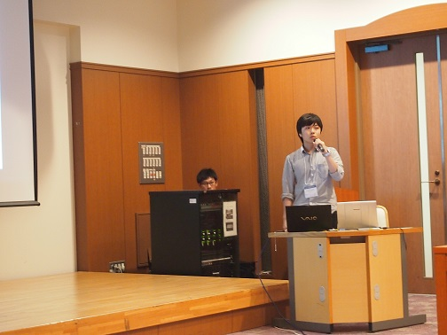
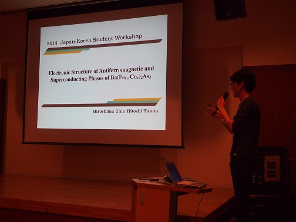

角田一樹:Study of Martensitic Phase Transition Mechanism in Ferromagnetic Shape Memory Alloy Ni-Fe-Ga-Co Film
田北仁志:Electronic Structure of Antiferromagnetic and Superconducting Phases of Ba(Fe1-xCox)2As2
藁科拓也:Observation of Three Different Topological Surface States on PbBi6Te10
朱思源:Ultrafast Electron Dynamics at the Dirac Node of Topological Insulator Sb2Te3

